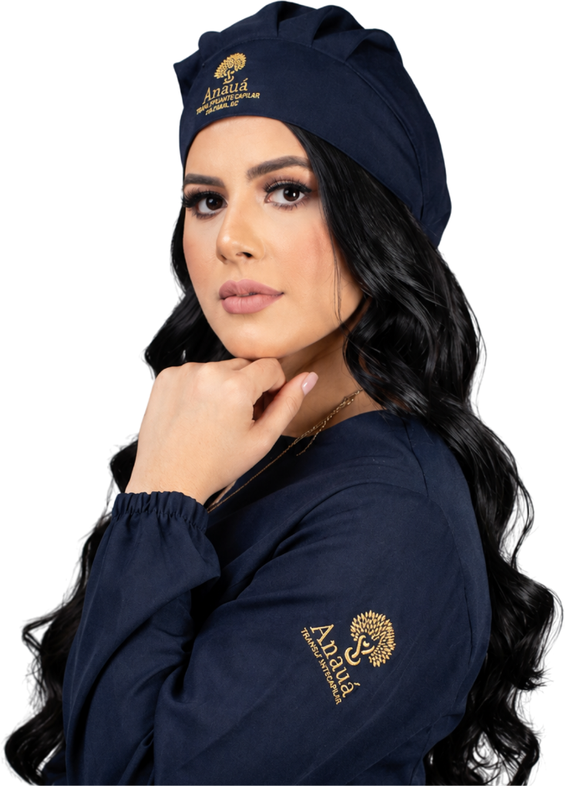
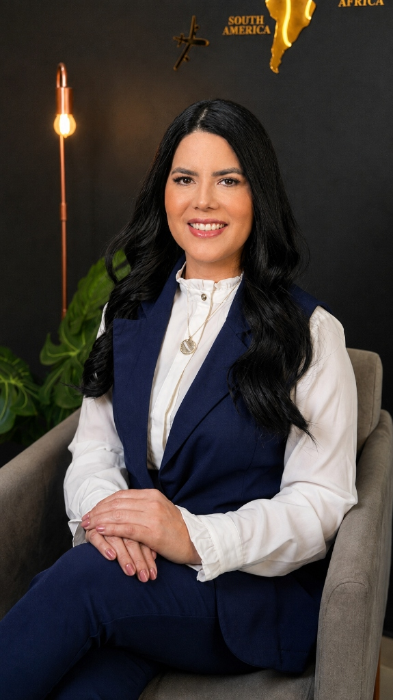

Sem cicatriz linear, procedimento indolor e resultado 100% natural. Recupere a linha frontal dos seus cabelos sob o cuidado cirúrgico minucioso da Dra. Luana Anauá em Manaus.

Ver a linha do cabelo recuar ou olhar no espelho e notar falhas na coroa traz um impacto constante na imagem e na autoestima. O transplante capilar moderno devolve a sua jovialidade com naturalidade invisível.
FUE (Follicular Unit Extraction) é a técnica mais moderna e refinada do mundo para restauração capilar. Os fios são transplantados individualmente da área doadora para a área calva.
Avaliação microscópica da densidade doadora e desenho estratégico da linha frontal de acordo com seus traços faciais.
Extração individual dos enxertos foliculares com micro-punches de precisão sub-milimétrica. Sem cortes e sem cicatriz linear.
Os folículos são triados sob microscópio stereoscópico e conservados em solução de alta viabilidade celular.
Abertura de micro-orifícios e implantação dos fios respeitando o ângulo, sentido e densidade nativos do seu cabelo.
A restauração capilar atende a diversos tipos e graus de falha ou perda capilar, oferecendo resultados definitivos.
Preenchimento da linha da testa e têmporas recuadas, devolvendo o contorno jovem do rosto.
Restauração do topo da cabeça (vértice) com máxima densidade de fios cobrindo falhas visíveis.
Refinamento de procedimentos antigos para corrigir assimetrias ou linhas frontais artificiais.
Transplante folicular FUE adaptado para falhas na barba ou sobrancelha com total naturalidade.

Com foco exclusivo em Restauração Capilar e Tricologia Médica, a Dra. Luana Anauá combina precisão cirúrgica minuciosa ao olhar estético de visagismo facial.
Sua missão é proporcionar aos pacientes de Manaus e de toda a região Norte uma experiência médica humanizada, confortável e com padrões de qualidade internacionais — eliminando a necessidade de grandes deslocamentos para outros estados para realizar a cirurgia capilar.
Análise computadorizada do couro cabeludo para determinar com exatidão o número de enxertos.
Procedimento sem dor, com anestesia local serena para total relaxamento do paciente.
Consultas periódicas de acompanhamento da evolução do crescimento capilar em Manaus.
Veja as transformações reais de linha frontal, densidade e cobertura obtidas com o Transplante Capilar FUE.
Consulta médica presencial na clínica em Manaus ou pré-avaliação via fotos por WhatsApp.
Estudo da área doadora e desenho cirúrgico personalizado da hairline.
Procedimento FUE confortável, em ambiente estéril com equipe especializada.
Retornos para lavagem, acompanhamento e laserterapia de estímulo ao crescimento.
Não! O procedimento é realizado sob anestesia local serena e sedação leve. O paciente não sente dor durante a cirurgia e pode assistir à TV, ouvir música ou relaxar ao longo do dia.
Na técnica FUE (Follicular Unit Extraction), os folículos são extraídos individualmente com micro-punches de menos de 1mm. Não há corte nem cicatriz linear corrida posterior, permitindo usar até cabelos bem curtos.
Os fios transplantados começam a brotar em torno do 3º ao 4º mês após o procedimento. Aos 6 meses já é visível uma mudança significativa, e o resultado final de densidade total ocorre entre 10 e 12 meses.
Os folículos capilares retirados da área doadora (nuca e laterais) não possuem o código genético da calvície. Portanto, quando implantados na área receptora, eles mantêm essa característica e continuam crescendo por toda a vida.
A recuperação da técnica FUE é muito rápida. A maioria dos pacientes retorna a atividades leves de escritório em 3 a 5 dias. Exercícios físicos intensos devem ser suspensos por cerca de 15 a 20 dias.